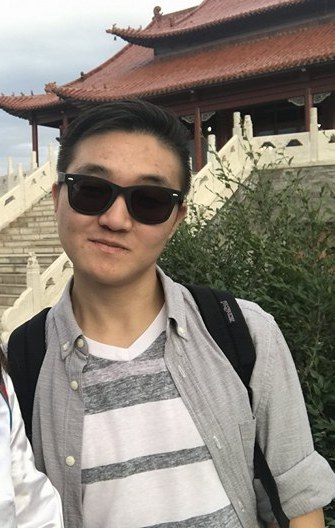

Dylan is a senior pursuing a bachelor's in computer science. He is passionate about software development, data pipe-lining, and clean solutions to complicated problems.
Originally from Alaska, he loves to climb, ski, and bike in his free time
Jade has lived all over the worlds and previously held careers in the finance and fashion design industries. She is currently pursuing a degree at CU Boulder in computer science which is an ideal blend of her passions for mathematics and creative problem solving. In her spare time she trains parkour, and coaches Obstacle Course Racers. Her future goals include finishing her degree, and continued research into Artificial intelligence and Machine Learning.

Originally from Texas, I moved to Colorado 2 years ago to learn computer science and Japanese at The University of Colorado Boulder. I chose computer science because I like the endless possibilities that come with the field. My goal is to eventually work with online education.

Munkhbayan "Bryan" Togtokh was born in Ulaanbaatar, Mongolia. He moved to Colorado in 2016 to attend CU Boulder and study Computer Science, and is currently a sophmore. He wants create and develop apps that have a meaningful impact on peoples' lives. In the summer of 2017 he started a company in his native country that helps students improve their educational experience. He wants to later expand his reach to other mediums to try to help people improve their situation by giving them access to the resources they need.

This is where Julio writes about himself
Yun Ting Chen is a senior majoring in Computer science and Economics who is from Taiwan. She loves skiing, hiking and play drums. Her goal would be going to grad school that could combine statistics with computer science or front-end design.